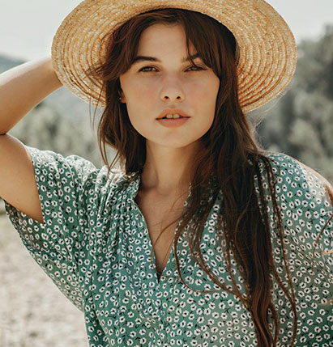

Обо мне
Моя жизнь неразрывно связана с фотографией. С самого детства меня привлекала возможность запечатлеть моменты и эмоции на фотографиях. Я всегда стремилась передать красоту и глубину каждого кадра, чтобы зритель смог почувствовать атмосферу и эмоции, которые присутствовали в момент съемки.
Мои фотографии – это не просто изображения, это истории, которые рассказывают о жизни, о любви, о природе и об окружающем мире. Я стремлюсь создавать уникальные и запоминающиеся кадры, которые могут вызвать у зрителя море эмоций и воспоминаний.
Что я делаю
Привет! Меня зовут Линда, и я фотограф с опытом работы в различных жанрах. Мое творчество охватывает портреты, свадебные съемки, фотосессии семей и детей, а также пейзажную фотографию. Моя цель - запечатлеть вашу индивидуальность, эмоции и моменты счастья, чтобы они остались с вами на долгие годы. Я создаю атмосферу доверия и комфорта на съемке, чтобы вы чувствовали себя естественно и раскрывались перед объективом. Давайте воплотим ваши мечты в красивые и запоминающиеся фотографии! Жду наших встреч и увлекательных фотосессий!
Новый стиль иллюстрации
Иллюстрация
Иллюстрация в фотографии — это не просто изображение, а целый мир, запечатленный в одной рамке.
В разных жанрах фотографии — от портрета до пейзажа — иллюстрации способны рассказывать истории, задавать вопросы и вызывать интригу. С помощью цвета и текстуры можно создать настроение или акцентировать внимание на главном.
Новый и современный
Современная фотография — это искусство захватить эмоции и моменты, создавая стильные и запоминающиеся изображения.
Насчет нас
Добро пожаловать в фотостудию
Я всегда рада приветствовать новых гостей в своей фотостудии. Здесь вы найдете уютную атмосферу, профессиональное оборудование и заботливый подход к каждой фотосессии.
Вместе мы создадим прекрасные и запоминающиеся фотографии, которые будут радовать вас и ваших близких. Добро пожаловать в мир искусства и красоты, добро пожаловать в мою фотостудию! Я уверена, что вам здесь понравится, и мы сделаем отличные снимки вместе.